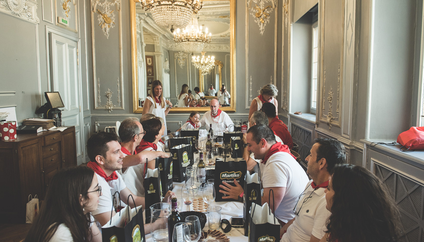

Guías para vivir San Fermín
Todo lo que necesitas saber para disfrutar la experiencia con criterio, emoción y sin caer en lo turístico.


Más guías

Ver el encierro desde un balcón privado
Una forma cómoda y privilegiada de disfrutar el encierro.
Leer más

Hospitality corporativo en San Fermín
Cómo organizar experiencias exclusivas para empresas durante San Fermín.
Leer más
Mañanas sanfermineras guiadas
Una manera distinta de entender la ciudad durante las fiestas.
Leer más
Cómo vivir San Fermín evitando lo turístico
Claves para disfrutar una experiencia más auténtica y menos masificada.
Leer más
San Fermín más allá del encierro
Descubre otros momentos y experiencias que forman parte de San Fermín más allá del encierro.
Leer más
Cómo ver el encierro de Pamplona
Opciones, consejos y claves para disfrutar uno de los momentos más icónicos de San Fermín.
Leer más
Guía para vivir San Fermín por primera vez
Todo lo que necesitas saber para disfrutar San Fermín si es tu primera vez.
Leer másCuéntanos qué te gustaría vivir y te ayudamos a diseñar una experiencia a tu medida.